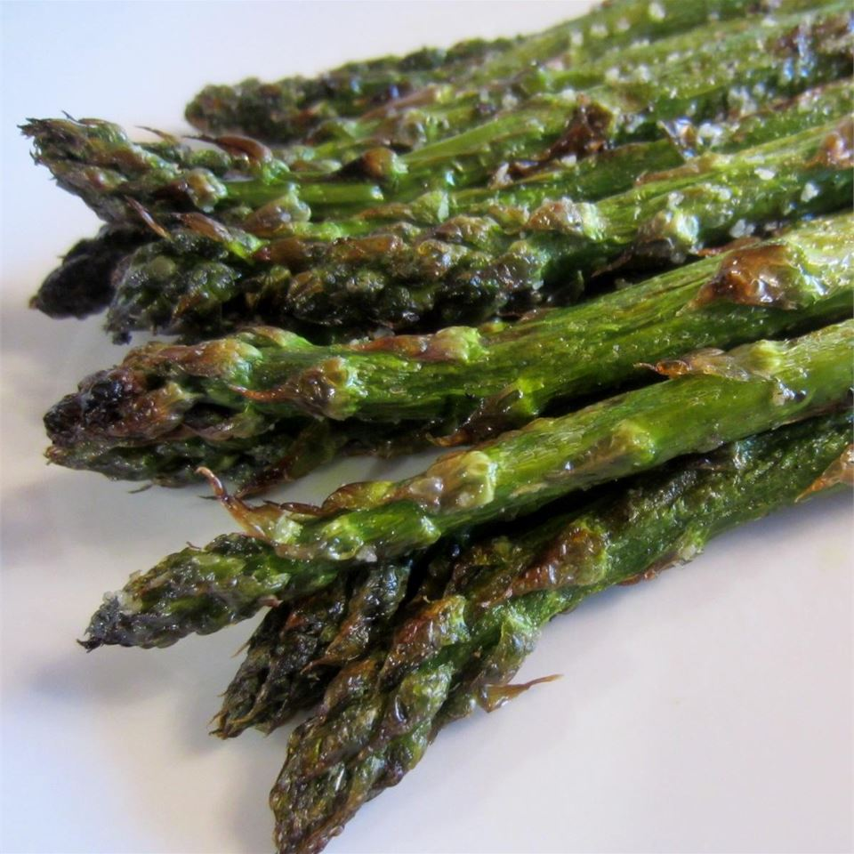

Grilled Asparagus

Description
Sometimes you want your greens to taste good. That's where this awesome grilled asparagus recipe from allrecipes.com comes in.
Source: https://www.allrecipes.com/recipe/17445/grilled-asparagus/
Ingredients
- 1 pound fresh asparagus spears, trimmed
- 1 tablespoon olive oil
- salt and pepper to taste
Steps
- Preheat grill for high heat.
- Lightly coat the asparagus spears with olive oil. Season with salt and pepper to taste.
- Grill over high heat for 2 to 3 minutes, or to desired tenderness.